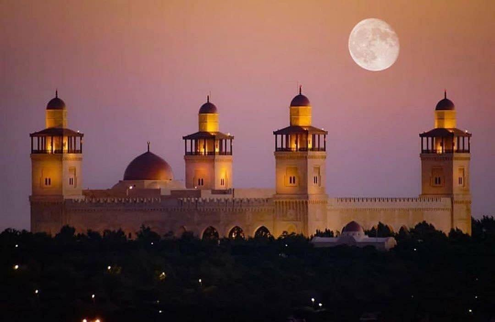
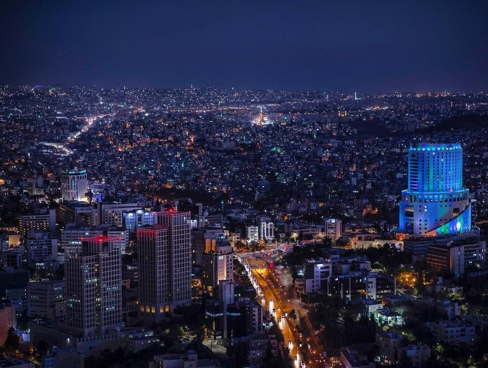
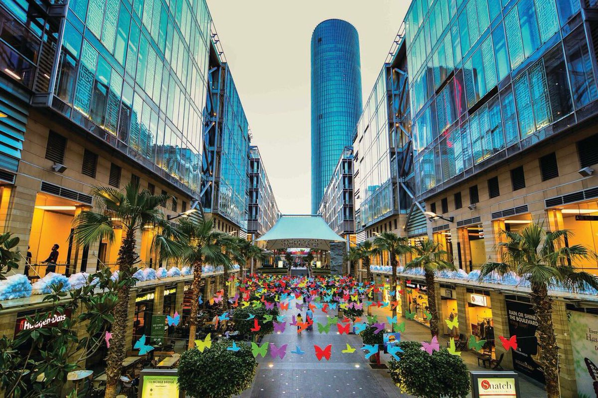
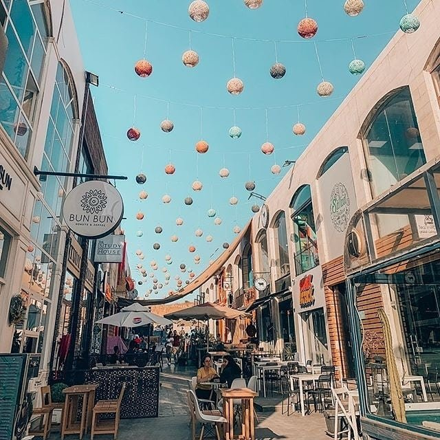

Amman, Arabic ʿAmmān, biblical Hebrew Rabbath Ammon, ancient Greek Philadelphia, capital and largest
city of Jordan. The city is built on rolling hills at the eastern boundary of the ʿAjlūn Mountains, on
the small, partly perennial Wadi ʿAmmān and its tributaries.
The city is generally reasonably well-organized, enjoys great weather for much of the year and the
people are very friendly..
There is a lot of activities you can do while visiting Amman such as:
- Visiting the Amman Citadel , and the Roman Theater will feel like traveling back in time. Visiting Al Balad
- Downtown Amman , art galleries and museums, at Rainbow Street can't be beat.
- You can enjoy a huge variety of restaurants and cafes and you also have an excellent Number of spas.
Best Hotels in Amman:
- W Amman Hotel
- Located in the heart of Abdali, Amman’s up and coming new downtown
- City view - Le Royal Amman Opens in new window
- Located in the 3rd Circle, Le Royal is about 5 km from Marka International Airport
- City view - Al-Houriat Hotel
- Located in the heart of Downtown Amman 200 m from the Roman Amphitheatre.
- City view - The St. Regis Amman
- Located in Amman, 3.9 km from Zahran Palace, 29 km from International Airport.
- City view



